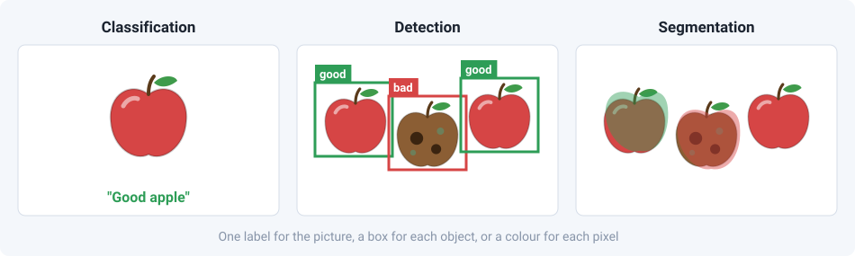
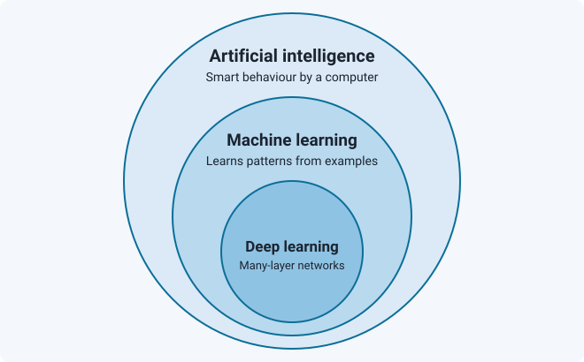
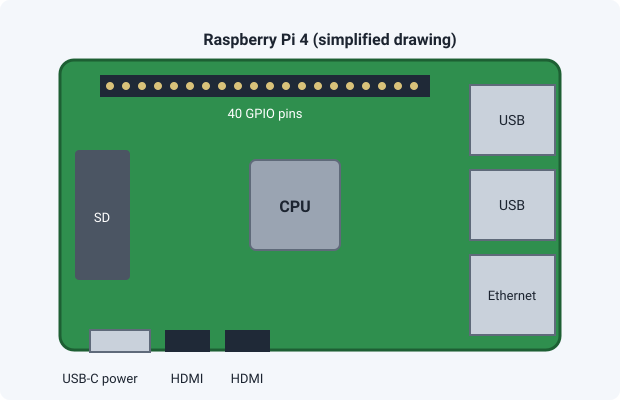
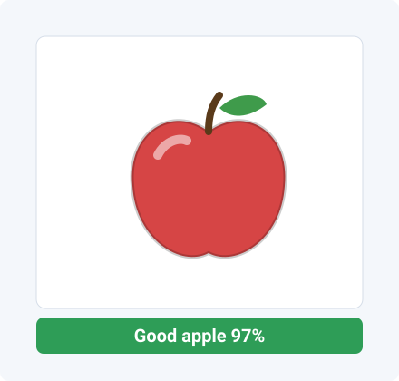
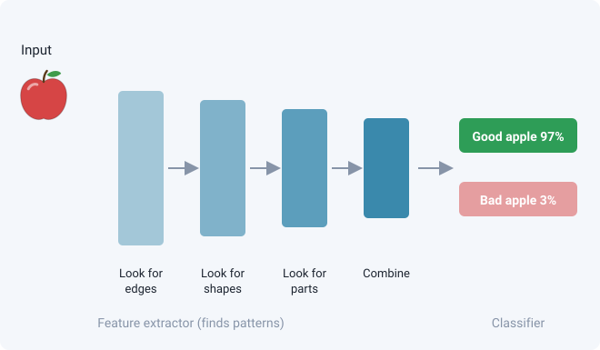
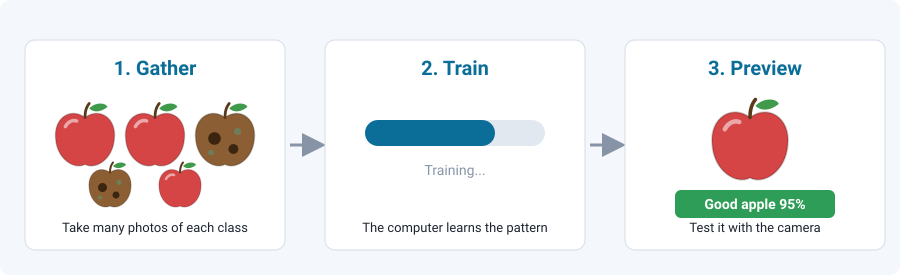
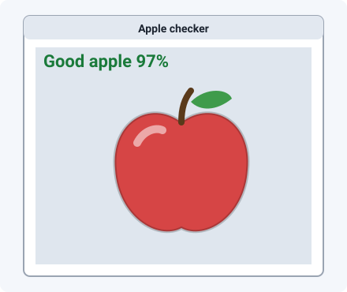
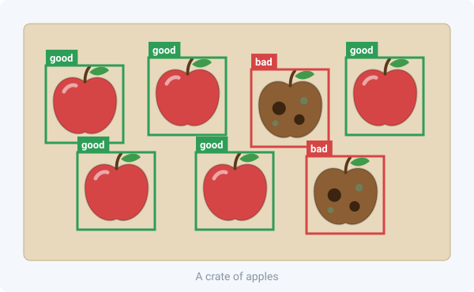
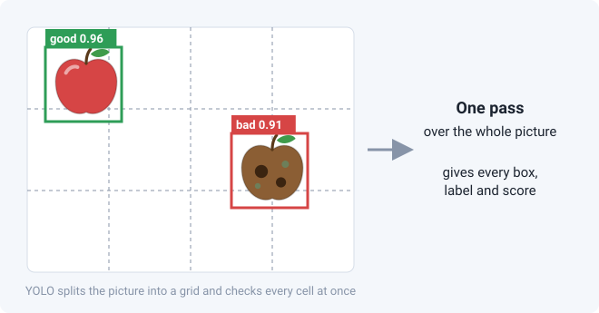
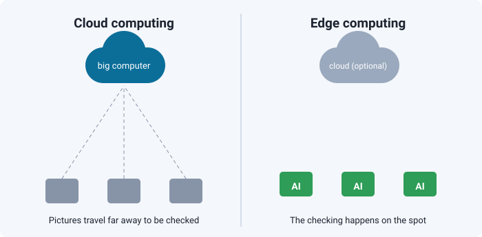

Part 2: Teach a camera to see
Use a Raspberry Pi 4 with a camera and a bit of AI. By the end, the camera will tell a good apple from a bad apple. The program is built around a loop again, just like the blinking LED.
By the end you can
- Explain what computer vision, a model and YOLO are.
- Train an image model in Teachable Machine and run it on a Raspberry Pi camera.
1What is computer vision?
Computer vision is a part of artificial intelligence (AI) that lets a computer understand pictures and video, the way you understand what your eyes see.
It is already used to find diseases in scans, recognise faces, spot defects on a factory line and help cars see the road. There are three common jobs:

- Classification: "What is in this picture?" One answer for the whole picture. We use this for the apples.
- Object detection: "What is here, and where?" It draws boxes. We meet this with YOLO later.
- Segmentation: "Which pixels belong to which object?"
Check yourself
A camera on a conveyor belt only needs to say "good" or "bad" for each apple. Is that classification or detection?
Show answer
Classification. One label per picture, and no box is needed.
2AI, machine learning and deep learning

- Artificial intelligence (AI)
- Any computer program that does something we think of as smart.
- Machine learning
- The computer learns patterns from examples instead of following rules a person wrote by hand.
- Deep learning
- Machine learning that uses neural networks with many layers. It works especially well on pictures when there is plenty of data.
- Model
- What you get after learning: a file that takes a picture in and gives an answer out.
3The Raspberry Pi and its camera
The Raspberry Pi is a low-cost computer about the size of a credit card. Unlike an Arduino, it runs a full operating system, so you can run Python, open windows and use a camera.

| You need | Why |
|---|---|
| Raspberry Pi 4 with power supply | The computer. |
| microSD card with the operating system | The Pi's storage. Install it with the free Raspberry Pi Imager program. |
| Monitor, keyboard and mouse | To use it like a normal computer. |
| USB camera | Plug it into a USB port. Your slides use a USB camera. |
Arduino vs Raspberry Pi: the Arduino is great at simple, reliable jobs such as reading a button or driving a motor. The Pi is better at heavy thinking such as recognising pictures. A robot can use both: the Pi decides, and the Arduino acts.
4Camera loop with Python and OpenCV
OpenCV is a free library of ready-made tools for working with pictures. A library is code that other people wrote so you do not have to. We use it with the Python language.
Open the Terminal on the Pi and prepare a workspace. Type these one at a time.
python3 -m venv ~/cv-env
source ~/cv-env/bin/activate
pip install opencv-python "numpy<2"The first line makes a private box (a virtual environment) for this project's tools. The second one switches it on. The third installs OpenCV and NumPy.
Now the camera loop. Save it as camera.py and run it with python3 camera.py.
import cv2
cap = cv2.VideoCapture(0) # open camera number 0
while True: # repeat forever, like loop() on Arduino
ok, frame = cap.read() # take one picture (a "frame")
if not ok: # camera problem: stop
break
cv2.imshow("Camera", frame) # show the picture in a window
if cv2.waitKey(1) == ord("q"): # press the q key to quit
break
cap.release() # let go of the camera
cv2.destroyAllWindows() # close the windowSame idea, new language. A video is just many pictures, one after the other. while True: in Python does the same job as loop() on the Arduino: it repeats forever. Each time round, the program grabs a new frame. In Python, the lines that belong inside the loop are indented (pushed in) instead of using curly brackets.
Check yourself
What happens each time the loop goes round?
Show answer
The program reads one new frame from the camera, shows it in the window, then checks whether you pressed q.
5How a computer tells pictures apart
Image classification means giving a picture a label and a confidence score. For example: "Good apple, 97%".

Inside, the model is a neural network: many tiny calculating units, loosely inspired by brain cells, connected in layers. For pictures we use a convolutional neural network (CNN):

- The first layers look for simple things, such as edges and colours.
- Later layers combine them into bigger things, such as a stem or a bruise.
- The last layer gives a score for each label. The highest score wins.
You do not have to build this. Next, you teach one with examples.
6Teach it: good apple vs bad apple
Teachable Machine is a free website from Google. You show it pictures from your webcam, and it trains a model in your browser. No code is needed.

- Go to teachablemachine.withgoogle.com, choose Get Started, then Image Project, then Standard image model.
- Rename the first class
Good apple. Hold a good apple in front of the webcam and record many samples. - Rename the second class
Bad apple. Do the same with a bruised or rotten apple. - Add a third class
Nothingwith just the empty background, so the model learns what "no apple" looks like. - Click Train Model, then test it in the preview.
Tips for a better model
- Record at least 50 samples per class.
- Turn the apple around and move it closer and further away.
- Use several apples, not just one.
- Train in the same light and background where you will use it.
Check yourself
Your model calls everything a "bad apple". Name one thing you could do to fix it.
Show answer
Add more and varied samples of good apples (different angles and lighting), and make sure each class has a similar number of samples.
7Run your model on the Raspberry Pi
Now move your trained model from the browser onto the Pi. Use the Pi's own desktop (not SSH) and a USB webcam.
- In Teachable Machine click Export Model, open the TensorFlow Lite tab, choose Floating point, and click Download my model.
- Unzip the download. You should see a
.tflitemodel file andlabels.txt. Copy both into one folder on the Pi, for example~/apples. - Install the TensorFlow Lite runtime, a small program that runs models, in the same terminal as before:
pip install tflite-runtimeIf that line fails on your Pi, try pip install ai-edge-litert instead. The program below works with either. If you see an error like numpy.core.multiarray failed to import, the NumPy version is too new. Run pip install "numpy<2" to fix it.
Save this as apples.py in the same folder. If your model file has a different name, change MODEL.
import cv2
import numpy as np
try:
from tflite_runtime.interpreter import Interpreter
except ImportError:
from ai_edge_litert.interpreter import Interpreter
MODEL = "model_unquant.tflite" # your model file
LABELS = "labels.txt" # your label list
# --- set up (runs once) ---
labels = [line.strip().split(" ", 1)[1] for line in open(LABELS)]
interpreter = Interpreter(model_path=MODEL)
interpreter.allocate_tensors()
inp = interpreter.get_input_details()[0]
out = interpreter.get_output_details()[0]
size = inp["shape"][1] # the picture size the model expects
cap = cv2.VideoCapture(0)
# --- main loop (repeats forever) ---
while True:
ok, frame = cap.read()
if not ok:
break
# get the frame ready for the model
img = cv2.cvtColor(cv2.resize(frame, (size, size)), cv2.COLOR_BGR2RGB)
if inp["dtype"] == np.float32:
img = img.astype(np.float32) / 127.5 - 1 # scale to -1 .. 1
img = np.expand_dims(img, axis=0)
# ask the model
interpreter.set_tensor(inp["index"], img)
interpreter.invoke()
scores = interpreter.get_tensor(out["index"])[0]
if out["dtype"] == np.uint8:
scores = scores / 255.0
best = int(np.argmax(scores)) # the label with the highest score
text = f"{labels[best]} {scores[best]:.0%}"
print(text)
cv2.putText(frame, text, (10, 35), cv2.FONT_HERSHEY_SIMPLEX,
1, (0, 255, 0), 2)
cv2.imshow("Apple checker", frame)
if cv2.waitKey(1) == ord("q"):
break
cap.release()
cv2.destroyAllWindows()Run it with python3 apples.py. Hold an apple up to the camera, and the label and confidence appear on the video.

Read the program in the same three parts as the Arduino one: declaration (imports and file names), set up (load the model, once), and the loop (grab a frame, ask the model, show the answer, repeat).
Check yourself
- Which line makes the program repeat?
- Which line picks the answer with the highest score?
Show answers
while True: makes it repeat. np.argmax(scores) finds the best label.
Challenge: change the program so that it prints "REJECT" when the label is "Bad apple" and the confidence is above 80%. That is the first step towards a machine that sorts apples.
8Beyond one label: object detection and YOLO
Classification gives one answer per picture. But a crate holds many apples, some good and some bad, all at once. Object detection finds every object and draws a box around it, with a label.

YOLO: "You Only Look Once"
YOLO is a very popular object detection model. Older methods looked at a picture many times to hunt for objects. YOLO looks once, so it is fast enough for live video. That is why it is used for robots, cars and cameras that need to react quickly. It works on cats, dogs, cars and people as well as apples.

| Classification (Teachable Machine) | Detection (YOLO) | |
|---|---|---|
| Answer | One label per picture | Many labels, each with a box |
| Knows where? | No | Yes |
| Good for | Good or bad apple on a belt | Counting apples, finding one in a crate |
| Training effort | Low: show it examples | Higher: you must draw boxes on many pictures |
Try it (optional, not from your slides). On a computer or Pi with Python, a ready-made YOLO model can be tried in two commands. It downloads a model that already knows 80 everyday objects, such as people, cars, cups and apples. On a Raspberry Pi it may run slowly, so expect only a few frames per second. I have not tested this on your Pi.
pip install ultralytics
yolo predict model=yolov8n.pt source=0 show=Truesource=0 means "use camera number 0". Press q in the window to stop.
Check yourself
You want a robot to count how many apples are in a box. Classification or YOLO?
Show answer
YOLO (object detection). It finds every apple separately, so you can count the boxes.
9Edge or cloud?
Where does the thinking happen? Cloud computing sends the picture over the internet to a big computer far away. Edge computing does the work on the spot, close to the camera, like your Raspberry Pi.

Running AI on a small device is called Edge AI. The apple checker is Edge AI. Why choose the edge?
- Fast. No waiting for the internet. A self-driving car cannot wait.
- Works offline. No connection needed.
- Private. Pictures stay on the device.
- Cheaper. Less data to send.
The trade-off: a small device is less powerful, so models must be small. That is why we exported a TensorFlow Lite model, a slimmed-down version made for small devices.
10Part 2 summary
- Computer vision lets computers understand pictures. Classification gives one label per picture. Detection finds objects and their position.
- Machine learning learns from examples. A model is the result.
- A camera program is a loop: grab a frame, process it, show or act on the result, repeat.
- With Teachable Machine you can train an image classifier in minutes and run it on a Raspberry Pi.
- YOLO is a fast object detector that finds many objects in one look.
- Edge AI runs the model on the device itself.
Reflection
What is the difference between machine learning and deep learning for pictures?
Show answer
In classic machine learning, people design the features to look for by hand. In deep learning, the neural network learns the features by itself from many examples.
Put it together: the Pi looks at the apple and decides good or bad. It tells an Arduino, which turns on an LED or moves a motor to sort the apple. That is a real mechatronic system.